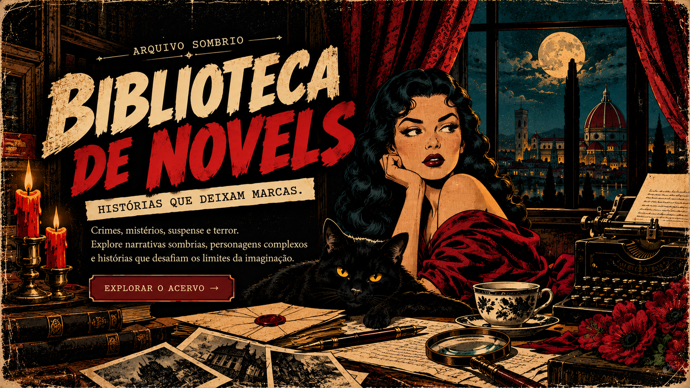

ARQUIVO
SOMBRIO
Início
Dossiês
Biblioteca de novels
Meu Arquivo

Explorar o acervo
O ACERVO · ARQUIVO SOMBRIO
Escolha sua próxima história
Encontre uma obra para começar ou continuar.
Carregando acervo...